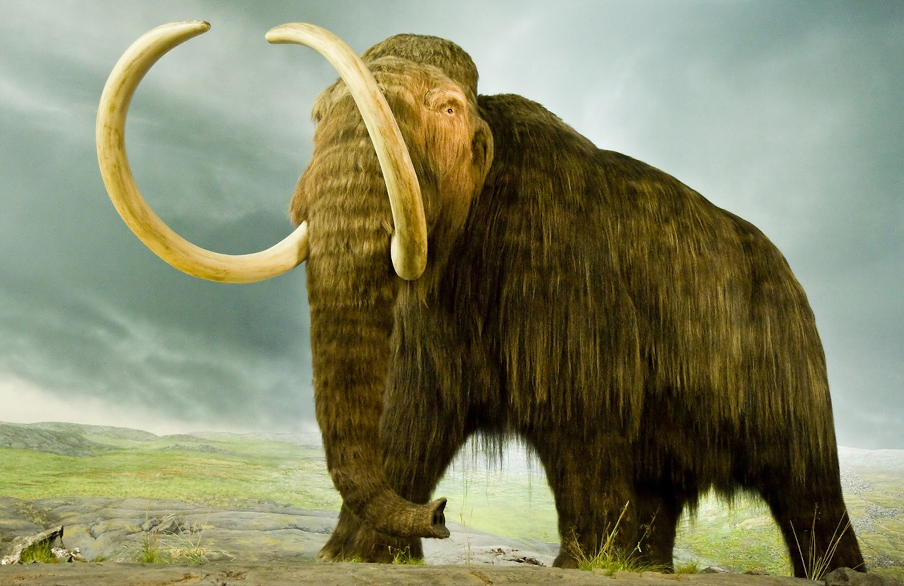
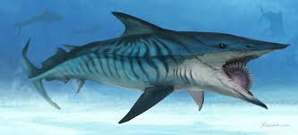
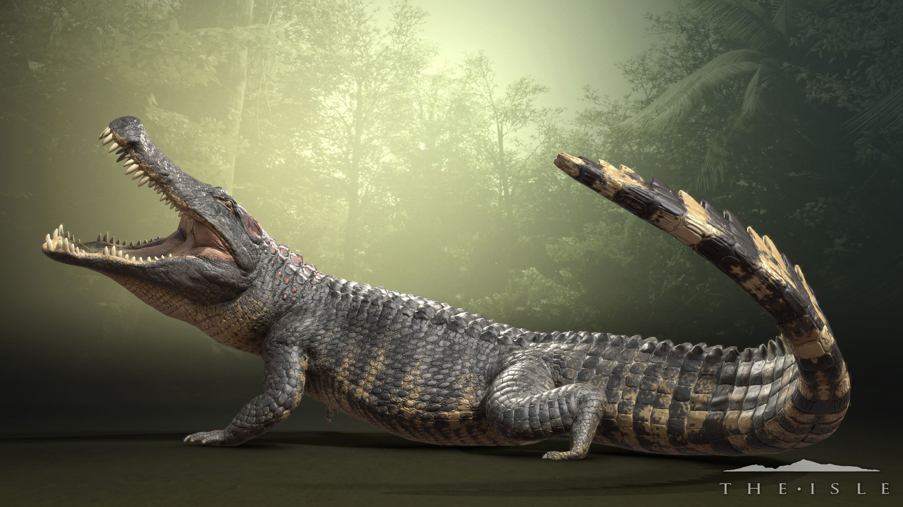
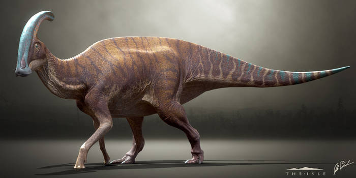

Titanoboa, (Titanoboa cerrejonensis), extinct snake that lived during the Paleocene Epoch (66 million to 56 million years ago), considered to be the largest known member of the suborder Serpentes. Titanoboa is known from several fossils that have been dated to 58 million to 60 million years ago. From extrapolations of body size made from excavated vertebrae (individual sections of the backbone), paleontologists have estimated that the body length of the average adult Titanoboa was roughly 13 metres (42.7 feet) and the average weight about 1,135 kg (1.25 tons). Titanoboa is related to living anacondas and boas, but it is uncertain whether it was more closely related to one or another of these modern constrictor snakes.
The woolly mammoth (Mammuthus primigenius) is an extinct species of mammoth that lived during the Pleistocene until its extinction in the Holocene epoch. It was one of the last in a line of mammoth species, beginning with Mammuthus subplanifrons in the early Pliocene. The woolly mammoth began to diverge from the steppe mammoth about 800,000 years ago in East Asia. Its closest extant relative is the Asian elephant. DNA studies show that the Columbian mammoth was a hybrid between woolly mammoths and another lineage descended from steppe mammoths. The appearance and behaviour of this species are among the best studied of any prehistoric animal because of the discovery of frozen carcasses in Siberia and North America, as well as skeletons, teeth, stomach contents, dung, and depiction from life in prehistoric cave paintings. Mammoth remains had long been known in Asia before they became known to Europeans in the 17th century. The origin of these remains was long a matter of debate, and often explained as being remains of legendary creatures. The mammoth was identified as an extinct species of elephant by Georges Cuvier in 1796.
Dunkleosteus is an extinct genus of arthrodire placoderm fish that existed during the Late Devonian period, about 358–382 million years ago. The name Dunkleosteus combines the Greek ὀστέον, osteon, meaning "bone", and Dunkle, in honour of David Dunkle of the Cleveland Museum of Natural History. Dunkleosteus could quickly open and close its jaw, like modern day suction feeders, and had a bite force of 6,000 N (612 kgf; 1,349 lbf) at the tip and 7,400 N (755 kgf; 1,664 lbf) at the blade edge. Numerous fossils of the various species have been found in North America, Poland, Belgium, and Morocco.
Helicoprion is an extinct genus of shark-like eugeneodont fish (a group of extinct cartilaginous fishes). Members of Eugenodontida possess a unique morphological feature called “tooth whorls”. They first appeared in the Devonian before going extinct in the Early Triassic.Helicoprion, like other chondrichthyan fish, had skeletons made of cartilage. Unfortunately, this makes it difficult to determine what Helicoprion looked like because the skeleton didn’t fossilise easily. Almost all Helicoprion specimens are fossilised 'tooth whorls' that consist of teeth embedded in a spiraled root.

Sabre-toothed cat, also called sabre-toothed tiger or sabre-toothed lion, any of the extinct catlike carnivores belonging to either the extinct family Nimravidae or the subfamily Machairodontinae of the cat family (Felidae). Sabre-toothed cats roamed North America and Europe throughout the Miocene and Pliocene epochs (23 million to 2.6 million years ago). By Pliocene times, they had spread to Asia and Africa. During the Pleistocene, sabre-toothed cats were also present in South America.
The "deino" in Deinosuchus derives from the same root as the "dino" in dinosaur, connoting "fearsome" or "terrible." In this case, the description is apt: Deinosuchus was one of the largest prehistoric crocodiles that ever lived, attaining lengths of up to 33 feet from head to tail and weights in the neighborhood of five to 10 tons.Deinosuchus, at the rate of about one foot per year--so it's difficult to know exactly how long the longest-lived specimens were, or at what point in their life cycles they reached maximum size.)
The ratzillas put it at about 740 kilograms, easily earning the species the title of heavyweight rodent of all time. A disproportion between the front and rear limbs suggests that the creature could rest on its haunches and manipulate food with its front paws like its modern relatives do, says Snchez-Villagra.Scientists who’ve analyzed the fossilized remains of an extinct South American relative of guinea pigs say that the ancient bruisers were as large as bison.In general, heftier herbivores have longer digestive tracts and can extract more nutrition from low-quality leaves and grasses than smaller herbivores with shorter guts can.
Parasaurolophus (/ˌpærəsɔːˈrɒləfəs, -ˌsɔːrəˈloʊfəs/; meaning "near crested lizard" in reference to Saurolophus) is a genus of herbivorous hadrosaurid ornithopod dinosaur that lived in what is now North America and possibly Asia during the Late Cretaceous Period, about 76.5–73 million years ago.[2] It was a herbivore that walked both as a biped and as a quadruped. Three species are universally recognized: P. walkeri (the type species), P. tubicen, and the short-crested P. cyrtocristatus. Additionally, a fourth species, P. jiayinensis, has been proposed, although it is more commonly placed in the separate genus Charonosaurus. Remains are known from Alberta (Canada), New Mexico and Utah (United States), and possibly Heilongjiang (China). The genus was first described in 1922 by William Parks from a skull and partial skeleton found in Alberta.

Elasmotherium is an extinct genus of large rhinoceros endemic to Eurasia during Late Miocene through the Pleistocene, existing at least as late as 39,000 years ago in the Late Pleistocene.[2] A more recent date of 26,000 BP is considered less reliable.[2] It was the last surviving member of Elasmotheriinae, a distinctive group of rhinoceroses separate from the group that contains living rhinoceros (Rhinocerotinae). The two groups are estimated to have split at least 35 million years ago according to fossils and molecular evidence.
The Tasmanian tiger, also called Tasmanian wolf and thylacine, was neither a tiger nor a wolf, but a marsupial, and closely related to the Tasmanian devil. The last known Tasmanian tiger died in 1936, but hundreds of unconfirmed sightings have spurred investigations into whether the animal still lives.Fossil evidence suggests that the modern thylacine — Thylacinus cynocephalus, whose name means "dog-headed pouched one" — emerged about 4 million years ago. Once widespread across Australia, the animal disappeared everywhere except Tasmania about 2,000 years ago, according to the National Museum of Australia (NMA). The disappearance was likely due to competition with dingos. Modern people discovered the animal in Tasmania, thus its name.
.jpg)
The quagga is a subspecies of the plains zebra that was endemic to South Africa until it was hunted to extinction in the late 19th century. It was long thought to be a distinct species, but early genetic studies have supported it being a subspecies of plains zebra.The quagga is believed to have been around 257 cm (8 ft 5 in) long and 125–135 cm (4 ft 1 in – 4 ft 5 in) tall at the shoulder. It was distinguished from other zebras by its limited pattern of primarily brown and white stripes, mainly on the front part of the body. The rear was brown and without stripes, and appeared more horse-like. The distribution of stripes varied considerably between individuals. Little is known about the quagga's behaviour, but it may have gathered into herds of 30–50. Quaggas were said to be wild and lively, yet were also considered more docile than the related Burchell's zebra. They were once found in great numbers in the Karoo of Cape Province and the southern part of the Orange Free State in South Africa.